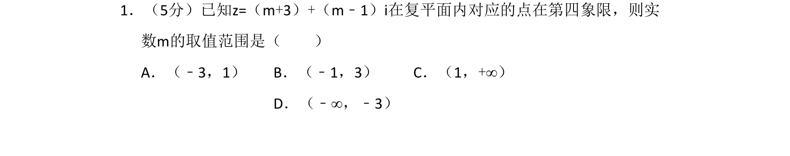
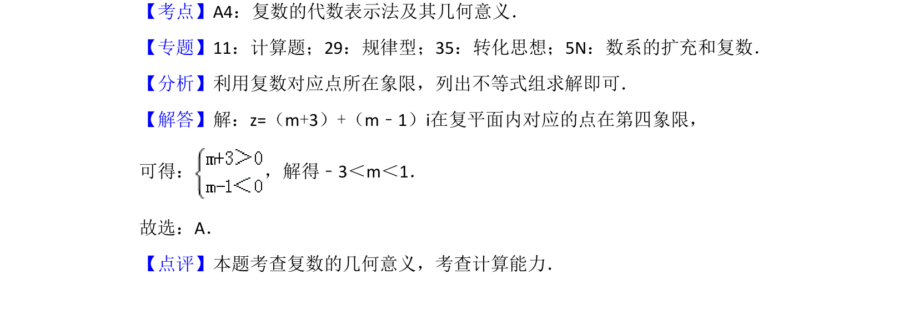

考点：复数的几何意义 象限坐标符号 解不等式组

已知复数代数形式，根据其在复平面内对应点所在象限求参数取值范围，涉及象限符号和解不等式组。

📄 原 PDF 第 1 页：
素材/真题/吉林/2008-2024·（吉林）数学高考真题/2016年高考数学试卷（理）（新课标Ⅱ）（解析卷）.pdf
1．（5分）已知z=（m+3）+（m﹣1）i在复平面内对应的点在第四象限，则实 数m的取值范围是（ ） A．（﹣3，1）B．（﹣1，3）C．（1，+∞） D．（﹣∞，﹣3）
【考点】A4：复数的代数表示法及其几何意义．菁优网版权所有 【专题】11：计算题；29：规律型；35：转化思想；5N：数系的扩充和复数． 【分析】利用复数对应点所在象限，列出不等式组求解即可． 【解答】解：z=（m+3）+（m﹣1）i在复平面内对应的点在第四象限， 可得： ，解得﹣3＜m＜1． 故选：A． 【点评】本题考查复数的几何意义，考查计算能力．